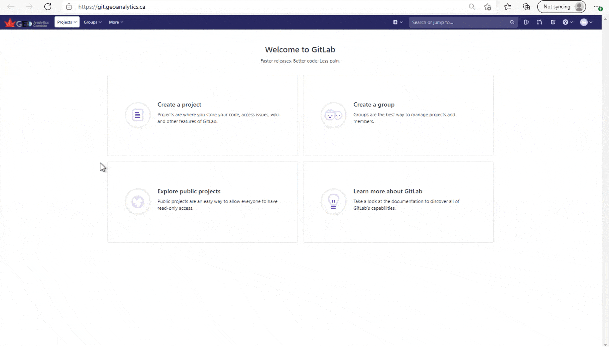
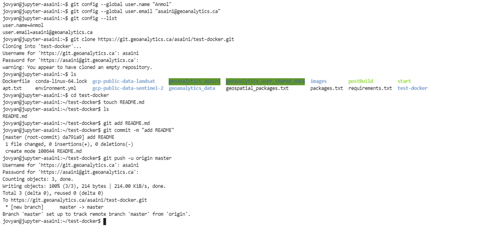
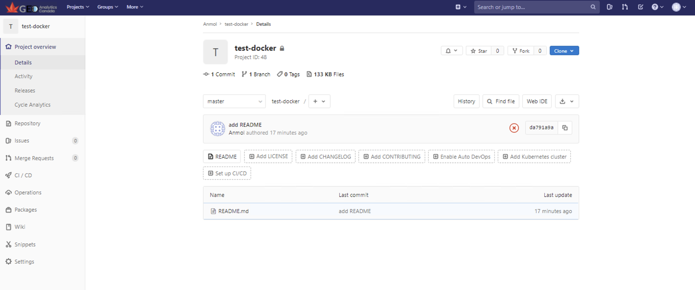
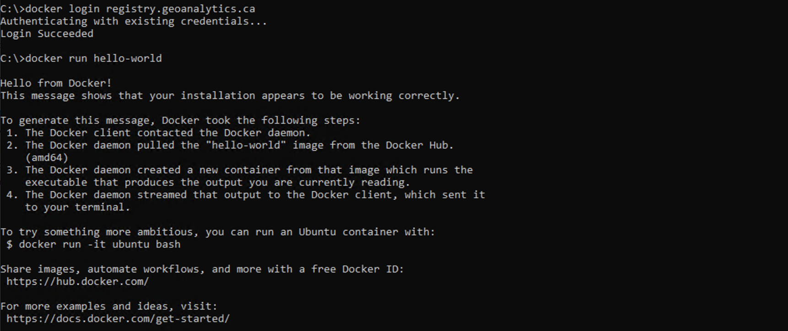
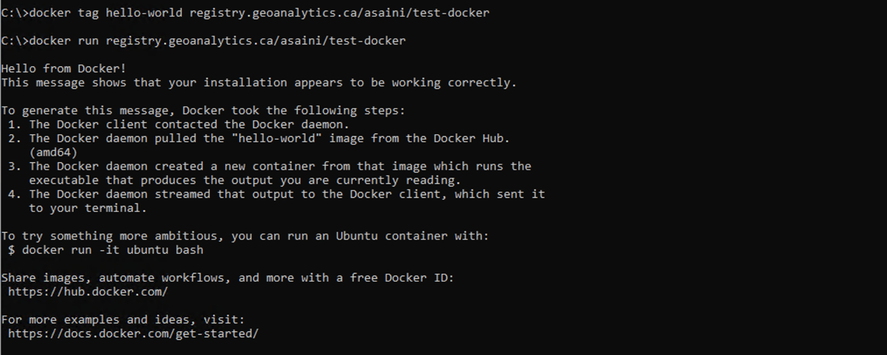

GitLab#
The GEOAnalytics Canada Platform hosts a Gitlab server to allow users to share code, projects, and docker images. In GitLab, users can create shared code repositories to encourage collaborative work or private code repositories to keep their own version-controlled code up to date. With each code repository, an image repository is available to push and pull docker container images.
In this notebook, we will create a project in GitLab, explore some basic git commands, set up with the container registry, and push/pull docker images to the GEOAnalytics registry.
1. Setting up a Project on Gitlab#
Let’s start by creating a new project on the GEOAnalytics Gitlab server.
First, launch Gitlab from the GEOAnalytics Canada dashboard.
From https://git.geoanalytics.ca/ click on the “Create a project” option.
Give the project a name, such as “test-docker” and choose whether you would like the project to be private , public, or internal.
Finally, click the “Create project”.
Below is a visualization of these steps.

2. Set up the Project using Git Commands#
Now we will use Git commands to initialize and set up the project. Git commands can be run in any terminal or command line tool. We will be using HTTPS to clone our repository which requires the user to enter there username and password for access to the project, so it is best to perform all the commands below in a terminal. To start, run the command below called git config to configure the user’s user.name and user’s user.email to set what email address and name commits will be from on your
local machine. Replace the "enter name" with your name, and the "<username>@geoanalytics.ca" with your GEOAnalytics email address.
git config --global user.name "enter name"git config --global user.email "<username>@geoanalytics.ca"
Now we must clone the project we just created so the connection between the repository and your computer is created. To do so, go to your project’s overview page and click on the “Clone” button and copy the URL from the “Clone with HTTPS.” The command below will automatically create a folder with the repository name and download the files there. Replace project-url with your project’s URL that you copied.
git clone <project url>
Our next steps will create a README Markdown file within the “test-docker” project and push our changes to the GitLab repository.
cd test-docker: Changes into the test-docker directory.touch README.md: Creates the README document.git add README.md: Adds the README.md file as it looks now to the commit (staging).git commit -m "add README": Commits the staged file as a new commit snapshot with a message.git push -u origin master: Send changes to the master branch of your remote repository.
Here is a screenshot showing all the steps done within the Jupyterhub terminal.

Head back to your Repository on GitLab and refresh the page. You should see the README.md added within your project repository!

This was only to set up a new project, if you have an existing folder you would like to link to your GitLab repository, then it can be done by:
Changing into the existing folder:
cd <existing_folder>Initializing the existing folder as a Git repository:
git initAdding the git URL of the project as an alias:
git remote add origin <project-url>Then using git add, git commit, and git push as you wish to update your project.
3. Adding Docker Images to the Container Registry#
In this section we will be exploring more on Docker and how to add images to the container registry. Remember, we explored how to log in to the GEOAnalytics Container Registry in the Authentication tutorial notebook.
Currently, accessing your Docker registry is not possible through GEOAnalytics’ Jupyter environment. To access the container registry, login to the through your desktop’s Command Prompt (Terminal) with the command:
docker login registry.geoanalytics.ca
If this command returns a login error, revisit the Authentication tutorial notebook to login by the alternative method.
Now, let’s run a few commands to show how Docker works.
The command below will pull the hello-world Docker image from the Dockerhub, if not present already, and run it. As a result, you should see the same output from the image.
docker run hello-world

Now, we want to add the “hello-world” image to the container registry. To achieve that, we must rename the image from “hello-world” to the location of our container registry, using the docker tag <source-img-name> <target-img-name> command. The target image name is the registry location because we want to push the image to a private registry and not the central Docker registry.
docker tag hello-world registry.geoanalytics.ca/<username>/test-docker: Replace<username>with your GEOAnalytics GitLab username.
Now that we have renamed the image to our container registry location, let’s run the image.
docker run registry.geoanalytics.ca/<username>/test-docker
Here is a snapshot of the two commands being executed in terminal: 
The final step is to push the local Docker image to our test-docker repository. This is done by executing the docker push <img-name> below:
``docker push registry.geoanalytics.ca/<username>/test-docker`` (Remember to use your username.)
Now head over to your Gitlab page and click on Packages > Container Registry from the left sidebar. You will see the Docker image you just pushed added to the repository’s container registry!

These were a just a few Docker commands we explored, to learn all the docker commands available, take a look at the Docker documentation and a sample Docker workflow:
Important Note: NEVER run a Docker image you don’t know about. Only run a dockerfile from a trusted page and make sure to examine its source code!